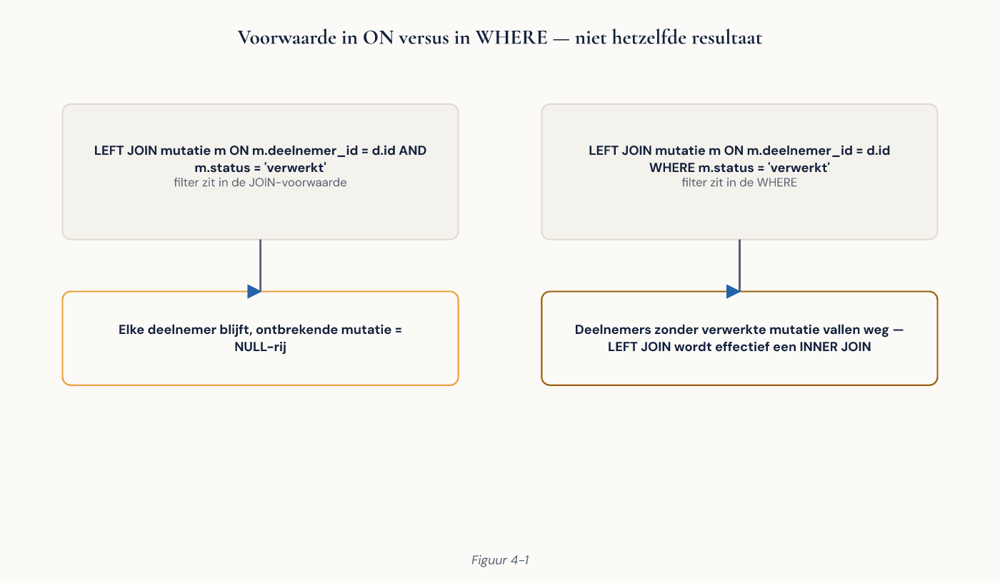

Deel 4 — Slidedeck
SQL verdieping: joins, subquery’s en CTE’s Niveau 1, dagdeel 4 | 40 slides
---scheidt slides. Notities: = spreektekst.
Slide 1 — Titel
Joins, subquery’s en CTE’s
Niveau 1 — Deel 4
Gegevens uit meerdere tabellen combineren — zonder stille fouten
Slide 2 — Jullie vragen uit deel 3
Notities: oogst drie vragen die met deel 3 onbeantwoordbaar waren. Schrijf ze op het bord. Kom er aan het eind op terug.
Slide 3 — Drie fouten die geen foutmelding geven
INNERwaarLEFTbedoeld is → rijen ontbreken- Voorwaarde in
WHEREbij een outer join → outer wordt inner - Fan-out bij één-op-veel → totalen te hoog
Alle drie zien er plausibel uit.
Slide 4 — Waarom joinen
Deel 5 splitst gegevens op zodat elk feit één keer bestaat. Joinen brengt weer samen wat bewust gescheiden is.
Denk in verzamelingen, niet in lussen.
Slide 5 — Een join is een filter op een product
SELECT count(*) FROM werkgever, dienstverband;
-- 250 × 11.000
SELECT count(*) FROM werkgever JOIN dienstverband USING (werkgever_id);
Notities: live draaien. Het eerste getal maakt indruk.
Slide 6 — INNER JOIN
SELECT d.achternaam, w.naam
FROM dienstverband dv
JOIN deelnemer d ON d.deelnemer_id = dv.deelnemer_id
JOIN werkgever w ON w.werkgever_id = dv.werkgever_id;
Alleen rijen met een match aan beide kanten.
Aliassen zijn geen luxe. Gebruik ze vanaf nu altijd.
Slide 7 — Niet doen
SELECT * FROM a, b WHERE a.id = b.a_id; -- komma-join
Vergeet je de WHERE → stilzwijgend een cartesisch product.
Gebruik de expliciete JOIN-syntaxis.
Slide 8 — Opdracht 4.1
Eerste joins
15 min
Slide 9 — LEFT JOIN
SELECT w.naam, count(dv.dienstverband_id)
FROM werkgever w
LEFT JOIN dienstverband dv ON dv.werkgever_id = w.werkgever_id
GROUP BY w.werkgever_id, w.naam;
Behoudt alle rijen links, ook zonder match.
Slide 10 — De vuistregel
INNERbeantwoordt vragen over combinaties.
LEFTbeantwoordt vragen over de linkertabel, met extra informatie.
“Alle werkgevers met hun aantal deelnemers” → LEFT
Slide 11 — Waarom juist die rijen interessant zijn
Een aangesloten werkgever zonder enige deelnemer is:
- een fout in de administratie, of
- een werkgever die niets aanlevert
LEFT JOIN vindt wat er níét is.
Slide 12 — Voorspel
Werkgever zonder dienstverbanden, na LEFT JOIN:
count(*) → ?
count(dv.dienstverband_id) → ?
Notities: meerderheid zegt 0 en 0. Het is 1 en 0.
Slide 13 — count(*) na een LEFT JOIN
Er ís een rij — gevuld met NULL’s.
count(*) telt hem: 1
count(kolom) telt alleen niet-NULL: 0
Slide 14 — RIGHT, FULL, CROSS
RIGHT — draai de tabellen om en schrijf LEFT
FULL — alles van beide kanten; voor het vergelijken van bronnen
CROSS — elke combinatie; nuttig om een volledig raster te maken
Slide 15 — ON, USING, NATURAL
ON d.deelnemer_id = dv.deelnemer_id -- altijd goed
USING (deelnemer_id) -- korter, één kolom
NATURAL JOIN -- NIET GEBRUIKEN
NATURAL joint op alle gelijknamige kolommen.
Iemand voegt een kolom toe → je query verandert stilzwijgend.
Slide 16 — Opdracht 4.2
INNER of LEFT
20 min
Slide 17 — Pauze
Slide 18 — De klassieke fout
SELECT w.naam, count(p.premienota_id)
FROM werkgever w
LEFT JOIN premienota p ON p.werkgever_id = w.werkgever_id
WHERE p.betaaldatum IS NULL -- ← hier
GROUP BY w.werkgever_id, w.naam;
Notities: draaien, rijen tellen, zaal laten verklaren vóórdat je het zegt.
Slide 19 — Waarom
1. FROM / JOIN ← de rijen ontstaan
2. WHERE ← en worden hier weggegooid
Werkgevers die álles betaalden, hebben geen enkele rij meer over.
Je LEFT JOIN is een INNER JOIN geworden.
Slide 20 — De reparatie
LEFT JOIN premienota p
ON p.werkgever_id = w.werkgever_id
AND p.betaaldatum IS NULL
Regel: bij een outer join horen voorwaarden over de rechtertabel in ON, niet in WHERE.

Slide 21 — Opdracht 4.3
De klassieke fout
Vinden, verklaren, repareren, controleren.
15 min
Slide 22 — Fan-out
SELECT count(*) FROM deelnemer; -- 8.000
SELECT count(*) FROM deelnemer JOIN aanspraak …; -- 13.300
SELECT count(*) FROM deelnemer JOIN aanspraak
JOIN dienstverband …; -- veel meer
Elke één-op-veel-join vermenigvuldigt rijen.
Slide 23 — De vraag die niemand kan beantwoorden
Stel dat daar sum(bedrag) had gestaan.
Hoeveel te hoog is dat rapport?
Niet alleen fout — onbepaald fout.
Slide 24 — Twee oplossingen
count(DISTINCT …)waar je telt- Eerst aggregeren in een CTE, dan joinen
De tweede is meestal schoner — en het patroon voor opdracht 4.9.
Slide 25 — Opdracht 4.4
Fan-out
15 min
Slide 26 — UNION, INTERSECT, EXCEPT
Joins zetten tabellen naast elkaar. Verzamelingsoperatoren zetten resultaten onder elkaar.
UNION |
Samenvoegen, ontdubbelen |
UNION ALL |
Samenvoegen, alles behouden |
INTERSECT |
In beide |
EXCEPT |
Wel in de eerste, niet in de tweede |
Gebruik UNION ALL tenzij je écht wilt ontdubbelen.
Slide 27 — Pauze
Slide 28 — Subquery’s
Scalair — één waarde
WHERE jaarsalaris > (SELECT avg(jaarsalaris) FROM dienstverband)
IN — een lijst EXISTS — bestaat er een rij? NOT EXISTS — anti-join
Slide 29 — De harde regel van vandaag
Gebruik NOT EXISTS,
niet NOT IN.
Eén NULL in de subquery → NOT IN geeft nooit rijen.
Geen foutmelding.
Slide 30 — Opdracht 4.5
Subquery’s en anti-joins
Inclusief de NOT IN-valkuil op bsn.
20 min
Slide 31 — CTE’s
WITH per_werkgever AS (
…
)
SELECT … FROM per_werkgever …;
- Van boven naar beneden leesbaar
- Meerdere keren bruikbaar
- Stap voor stap te testen
Slide 32 — Zo bouw je een complexe query
- Schrijf de eerste CTE
- Voer alleen die uit — klopt het?
- Bouw verder
- Herhaal
Notities: demonstreer dit. Het is de werkwijze die ze bij 4.9 nodig hebben.
Slide 33 — Zijn CTE’s traag?
Tot versie 12: ja, altijd een optimization fence. Sinds versie 12: nee, bij enkelvoudig gebruik.
Let bij PostgreSQL-advies altijd
op versie én datum.
Slide 34 — Recursieve CTE
WITH RECURSIVE maanden AS (
SELECT DATE '2025-01-01' AS maand -- anker
UNION ALL
SELECT maand + INTERVAL '1 month' -- recursie
FROM maanden WHERE maand < DATE '2025-12-01' -- stop
)
Vergeet de stopvoorwaarde → oneindige query.
Voor reeksen: liever generate_series.
Slide 35 — Opdracht 4.6
CTE’s
20 min
Slide 36 — Vensterfuncties
Rekent over een groep rijen
zonder ze samen te vouwen.
row_number() · rank() · sum() OVER (…) · lag() / lead()
Slide 37 — Het patroon dat je het vaakst nodig hebt
SELECT * FROM (
SELECT p.*, row_number() OVER (PARTITION BY werkgever_id
ORDER BY periode_jaar DESC,
periode_maand DESC) AS rn
FROM premienota p
) x WHERE rn = 1;
De filtering moet naar buiten — vensterfuncties bestaan in WHERE nog niet.
Slide 38 — Dezelfde vraag, vier manieren
Welke werkgevers hebben geen dienstverband?
NOT EXISTS— aanbevolenLEFT JOIN … IS NULL— even goedNOT IN— tijdbomEXCEPT— elegant voor sleutels
De keuze gaat over leesbaarheid
en robuustheid. Zelden over snelheid.
Slide 39 — Opdracht 4.9
Het werkgeversdossier
Alle werkgevers · geen fan-out · geen NULL waar een getal hoort · opgebouwd met CTE’s
30 min, drietallen
Slide 40 — Volgende keer
Deel 5 — Datamodellering en normalisatie
Vier dagdelen hebben we deze database gebruikt. Volgende keer beoordelen we hem — inclusief de bewuste fouten.
Meenemen: één ding in het model dat je zou veranderen.
Einde slidedeck deel 4.